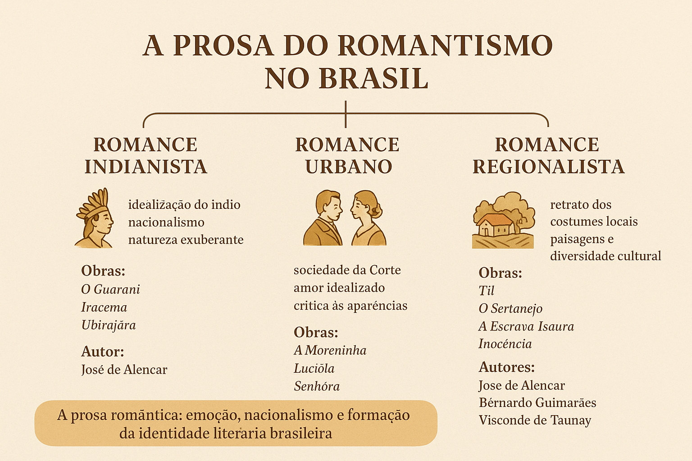

A Prosa do Romantismo no Brasil
A prosa romântica brasileira foi fundamental na construção da literatura e da identidade cultural do país no século XIX. Por meio do romance e da narrativa, os autores românticos reproduziram costumes, mentalidades e paisagens, oferecendo ao leitor uma visão imaginada e simbólica do Brasil.

Contexto histórico e literário
Desenvolvida no período pós-independência, a prosa romântica surge da necessidade de representar e nomear o novo país. Influenciada pela tradição europeia, a prosa brasileira adaptou temas, enredos e sensibilidades ao ambiente tropical e às complexas relações sociais do Império.
Características da prosa romântica
- Idealização do amor e da figura feminina;
- Sentimentalismo e apelo às emoções;
- Nacionalismo e valorização dos tipos e paisagens locais;
- Heróis movidos por ideais morais e afectivos;
- Estilo acessível, voltado para um público leitor crescente;
- Finalidade moralizante e, frequentemente, finais felizes.
As três vertentes da prosa romântica
1. Romance indianista
Voltado para a construção de um mito fundacional, o romance indianista idealiza o indígena como figura heroica e originária. Mistura aventura, lirismo e exaltação da natureza como matriz simbólica da nação.
Autor principal: José de Alencar — O Guarani, Iracema, Ubirajara.
2. Romance urbano
O romance urbano descreve a vida na Corte e nas cidades, explorando costumes, paixões e convenções sociais. É um território de conflitos entre sentimento e aparência, em que o amor idealizado frequentemente confronta interesses sociais.
Autores: Joaquim Manuel de Macedo — A Moreninha; José de Alencar — Lucíola, Senhora.
3. Romance regionalista
O romance regionalista aproxima o leitor da diversidade cultural e geográfica do Brasil. Retrata os costumes locais, a linguagem regional e as tensões sociais do interior, criando um panorama plural do país.
Autores e obras: José de Alencar — Til, O Gaúcho; Bernardo Guimarães — A Escrava Isaura; Visconde de Taunay — Inocência.
"A prosa romântica constrói narrativas que ajudam o Brasil a se pensar como nação."
José de Alencar: figura central
José de Alencar é o nome que melhor sintetiza as possibilidades da prosa romântica brasileira. Sua obra percorre o índio mítico, a vida urbana e as paisagens regionais, articulando linguagem poética e narrativa envolvente para criar representações duradouras da sociedade brasileira.
Importância e legado
- Consolidou o romance como gênero literário relevante no Brasil;
- Formou um público leitor e estimulou o mercado editorial;
- Produziu personagens e mitos que atravessaram a cultura brasileira;
- Preparou o terreno para o Realismo, que criticaria suas idealizações.
Conclusão
A prosa romântica foi peça-chave na representação literária do Brasil do século XIX. Ao combinar sentimentalismo, nacionalismo e atenção aos costumes regionais, os romances românticos ajudaram o país a estabelecer tradições narrativas que ainda informam a literatura brasileira.